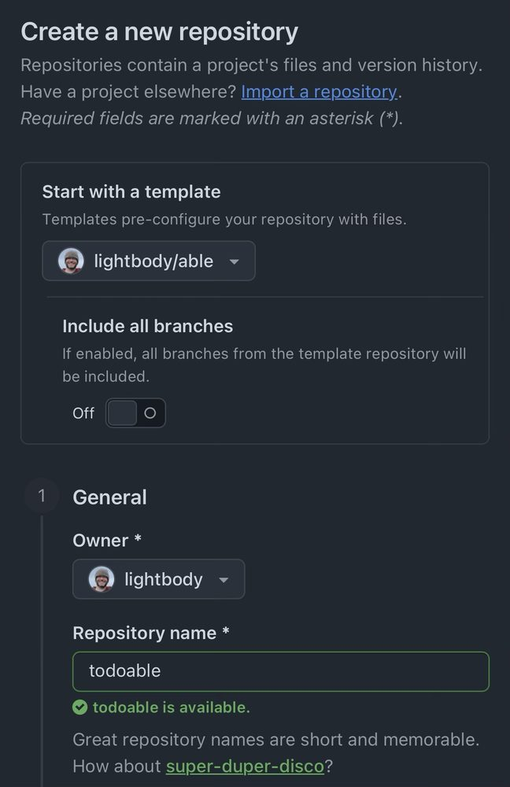
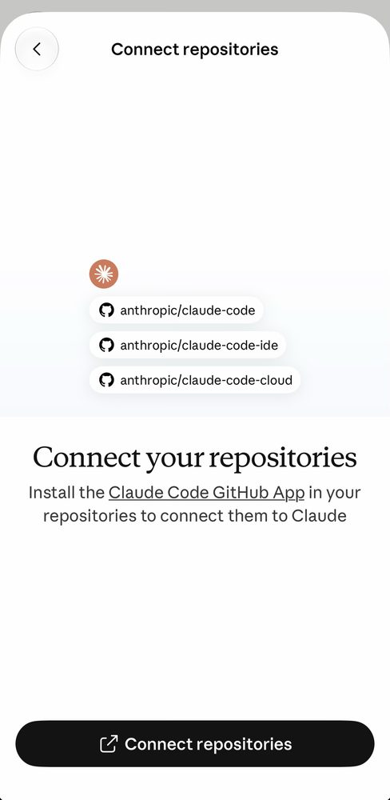
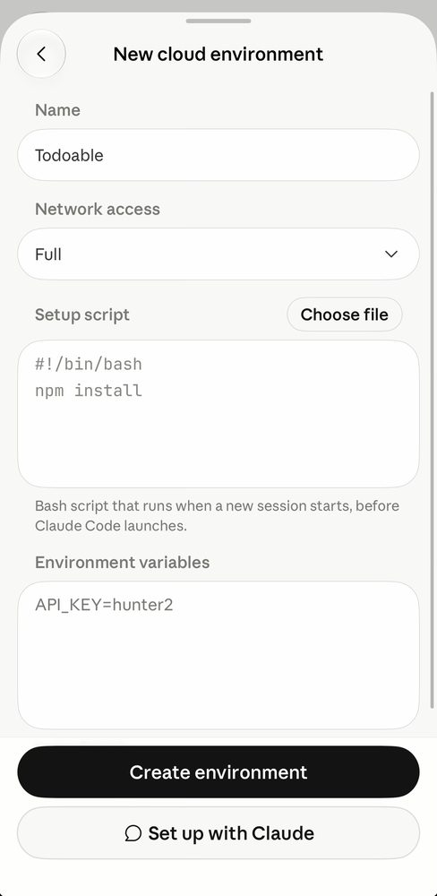
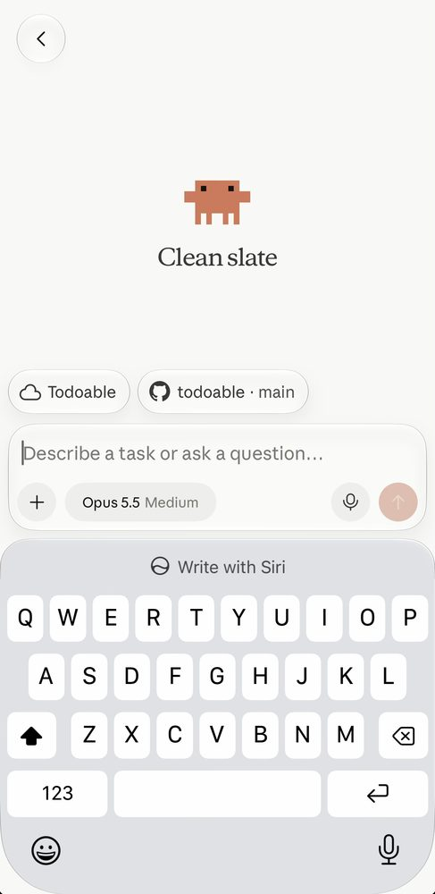

A software factory that fits in your pocket.
Able sets up your cloud, your pipeline and your agent's playbook, all from a phone or a browser. Then you describe what you want, your agent builds it, and a live Preview shows you the result. You review the running app, not the code.
It runs on Claude Code on the web, so a phone, a tablet or any browser is all you need.
How it works
Describe it. Preview it. Ship it.
- 01Describe itTell Claude what you want, in plain language, from your phone or any browser. It writes the code in a cloud session that already has your repo, your tools and its playbook.
- 02Preview itEvery pull request becomes a live copy of your app, with its own database branch and its own URL. You tap through the real thing, not a diff.
- 03Ship itMerge, and it deploys to Production. If something breaks, Claude reads the same traces, logs and metrics you can, and fixes it from evidence.
The factory model
You review the running app, not the code.
Able is built for a way of working where nobody has to read the diff. That only works if something else stands in for the reading. Four things do.
- Tests on every changeCI type-checks and builds the app and runs the backend tests on each pull request. Production deploys only after they pass.
- A live Preview for every pull requestIts own Fly app, its own Neon branch forked from Production, and a URL to try. It's deleted when the pull request closes.
- Telemetry your agent can readOne trace follows a click from the browser through the backend into Postgres. A built-in skill teaches Claude to query it, so bugs get fixed from evidence.
- Keys kept narrowThe Claude Code Tokens and the CI Tokens that deploy are separate, and the Claude Code Tokens are kept to minimal permissions between tasks. An agent working on your app can't reach beyond it.
Able sets everything up for AI-driven development in the cloud. But ultimately you're in control and can evolve the code however you want, including with an IDE and classic development workflows.
Anywhere, for anyone
Your phone is the dev machine.
- Gear you already ownA phone, a tablet or any browser, plus Claude Code on the web. No laptop, no terminal, no local toolchain.
- Guided setupClaude walks you through creating each account and API token, one step at a time, and checks that each one worked. If you can follow a checklist and paste a prompt, you can set it up.
- Build from anywhereStart a session wherever you have a few minutes. Your Agent Environment already has your code, your tests and the Claude Code Tokens, so there's nothing to set up again.
After setup
The factory stays in your repo.
Setup doesn't just wire up five services. It leaves your agent a workshop in your repo, so every later session starts out knowing how your app works and what it may touch.
AGENTS.mdThe agent's guidelines for your app: how sign-in and deploys work, what to log, how to treat its own tokens, and anything else you teach it.SECRETS.mdWhich tokens exist, what each can do, and how to rotate or revoke them.- SkillsRepeatable jobs your agent knows how to do, like querying your Production and Preview telemetry before it guesses. Able adds more over time, and you can write your own.
- WorkflowsAutomation for the routine: running the tests, deploying Production, spinning up a Preview for every pull request, and getting each cloud session ready with its dependencies and a test database.
Able is a template, not a framework: no library to depend on and no updates to pull. All of it is yours to edit as your app grows.
Start your factory
Six steps, from your phone.
Name your app, make its repo, and paste one prompt into Claude Code. Claude does the rest.
Make its repo from the
Able template.
Name it todoable.

Connect GitHub to Claude Code.

In Claude Code, create a cloud environment named "Todoable", with Full network access.

Start a session on "Todoable",
with the todoable repo selected.

Copy this, then paste it into the session:
Read https://github.com/lightbody/able/blob/main/PLAYBOOK.md and follow it to set up my new app. App Name: "Todoable". App Handle: `todoable`. I've made the `todoable` repo from the Able template and a cloud environment named "Todoable", and this session should be on both. Check that first.
Claude checks the repo and the environment, walks you through creating the other accounts, and does the rest. Missed a step? It tells you how to fix it. Using another coding agent? Make the repo the same way, open your agent in a clone of it, and paste the same prompt.
Under the hood
Best-in-class platforms, already wired together.
-
Frontend
Cloudflare Pages
Your React app, served from Cloudflare's global network.
Free tier -
Database
Neon
Serverless Postgres, with live queries that push changes to the browser.
Free tier -
Backend
Fly.io
Your TypeScript API, close to your database. It sleeps when idle, so a quiet app costs next to nothing.
Pay as you go -
Sign-in
WorkOS
Hosted sign-in with AuthKit, so you never handle passwords.
Free tier -
Observability
Grafana Cloud
Traces, logs and metrics for every request, from browser to database, for you and your agent.
Free tier
- Production on day oneMerge to
mainand it deploys. - Sign-in and live data already workingYou start on features, not plumbing.
Questions
FAQ
Do I have to read the code?
No, and that's the point. Able is built for a way of working where you review the running app, not the diff: Claude writes a change, a Preview shows you the result, and tests and telemetry back it up. The repo is yours, so you can read any of it whenever you like. Able just doesn't make you.
Is that safe?
It's as safe as the checks behind it, and those are modest today. CI type-checks and builds the app and runs the backend tests, and Production deploys only after they pass. There's no browser test suite yet, though Claude can add one as your app grows. Previews and telemetry catch much of what tests miss. If your app handles money or sensitive data, have someone who reads code look it over before you launch.
Do I need a laptop?
No. A phone, a tablet or any browser is enough. Claude Code on the web runs every session in the cloud, and setup is a checklist Claude walks you through, so there's nothing to install and no terminal to open.
What does Able leave in my repo?
Able is a template, not a framework. Setup copies it into your own repo, and from then on the code is yours: there's no Able library to depend on and no updates to pull.
What it does leave is the agent's workshop: an AGENTS.md of guidelines, SECRETS.md, skills, and workflows. Every later session starts from them. They're yours to edit as your app grows.
Why no staging environment?
When you build with AI, you make lots of changes quickly, and each one needs to be previewed on its own. So instead of one shared staging environment, every pull request gets its own live preview, with a database forked from production. That fits the way people actually build with agents. It also fits WorkOS pricing: its Production environment is free but Staging costs extra, so production and every preview share the free Production environment.
What's in the stack?
TypeScript everywhere: a React + Vite frontend, a Fastify backend and
Postgres. It's one npm workspaces monorepo with a shared
package that both sides import. GitHub Actions runs the tests and deploys
production and previews, and OpenTelemetry sends traces, logs and metrics
to Grafana Cloud.
Why TypeScript?
It's the easiest way to share logic between the frontend and the backend. Validation, types and business rules live in one place and run on both sides.
What does it cost?
For a low-traffic app, close to nothing. Cloudflare Pages, Neon, WorkOS and Grafana Cloud all have free tiers that cover it. Fly.io has no free plan but bills by usage, which for a quiet app is usually nothing (see below). Check each platform's pricing page for current limits.
Fly.io has no free plan. Will I get a bill?
Probably not, for a low-traffic app. Able configures the backend to sleep when no one is using it and wake on the next request, so you pay only for the minutes it actually runs. Fly.io also waives monthly bills under $5, so your card isn't charged at all.
Why WorkOS rather than Clerk?
Both are good. It was a judgement call about their free plans. Clerk's free plan supports custom domains and has a really nice built-in React component for managing a user's profile, but 2FA and passkeys need a paid plan. WorkOS's free plan doesn't support custom domains, but it does include 2FA and passkeys. If you'd rather use Clerk, it's easy to swap in.
Why Neon Realtime rather than Electric?
Electric's team joined Neon, and Neon Realtime is built from that work. It comes with the database you already have, so there's no separate sync service to run.
Why Grafana Cloud?
Your coding agent writes most of the code, so it should be able to see how that code behaves. Able sends standard OpenTelemetry to Grafana Cloud, and your agent queries it with Grafana's own command-line tool, using a read-only token. One trace follows a click from the browser through the backend into the database, so a bug report becomes evidence, not guesswork, and every preview is checked the same way. Grafana is open source, and its free tier covers a small app.
You're not locked in, either. The app only speaks OpenTelemetry (OTel), the open standard for telemetry, so moving to another provider, such as New Relic, Datadog or a self-hosted collector, means changing an endpoint and a token, not rewriting your code.
What do I need to get started?
A coding agent, plus accounts on GitHub, Neon, Fly.io, Cloudflare, WorkOS and Grafana Cloud. Your agent walks you through creating each one and the API tokens it needs, one step at a time.
With Claude Code on the web, a session starts from a repo, so you make your app's repo from the template first, and a cloud environment of its own, named after the app (say, "Todoable"): the steps at the top of this page. Every session on your app, starting with setup, runs on that environment. Create it with Full network access (recommended), or ask Claude for one with Limited access and just the hosts the app needs. Claude asks for each API token with only the permissions it needs at the time, and has you narrow them once setup is done.
Which agents are supported?
Able's setup has been tested most with Claude Code, including its
browser and mobile versions, which let you do the whole thing from your
phone. The setup is a plain-text playbook, so Codex and other capable
coding agents will likely work well too. The agent's guidelines live in AGENTS.md, a file format many coding agents read.